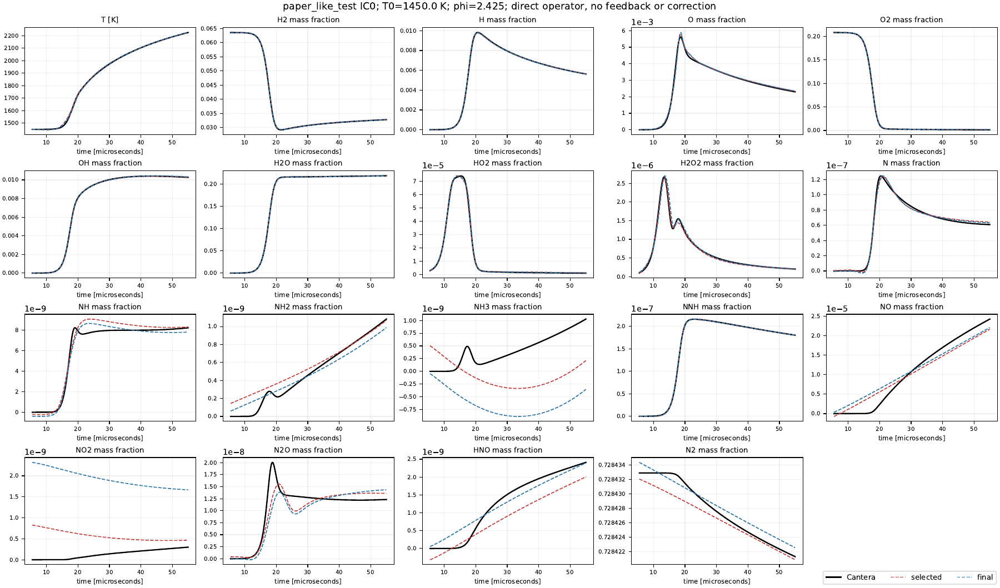
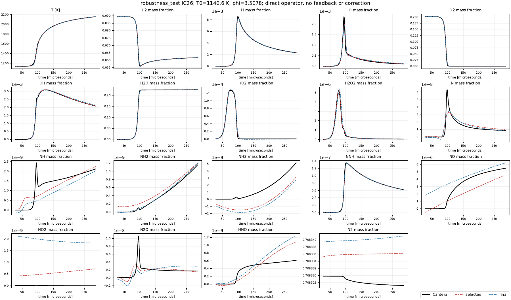

결과 완료: 2026-11-11 09:50 한국시간 · 정리: 2026-11-16 · seed 11 단일 실행 · 보존 원본: run_001
전체 궤적을 직접 예측하는 문헌 방식에서 주요 변수 곡선의 정확도는 개선됐다. 검증 선택 모델은 독립 42조건 중 34조건에서 주요 9변수의 세 시간구간 정확도 기준을 모두 만족했다. 그러나 음수 질량분율이 있어 물리 유효성 통과는 0/42다. 기존 ANN처럼 예측 상태를 되먹여 시간 진행하는 솔버의 성능 재현은 아직 완료하지 못했다.
기존 연구는 현재 상태에서 짧은 시간 뒤를 예측하고, 그 예측값을 다음 입력으로 사용해 반복 진행했다. 이 방식의 DeepONet 재현이 잘 되지 않아, 공개 코드에 구조·정규화·최적화 설정이 구체적으로 남아 있는 Venturi–Casey의 flexDeepONet Case3로 옮겨 먼저 0D 점화 궤적 자체를 문헌 수준에 가깝게 예측할 수 있는지 확인했다. 이번 결과는 그 별도 기준선으로 보존한다.
이전 React 실험의 직접 진단에서는 K1에서 K5 학습으로 바뀔 때 한 배치의 gradient L2가 약 164배 커졌고, 기존 학습률의 첫 업데이트에서 검증 성능이 급락했다. 학습률을 1/100로 줄인 통제에서는 그 즉시 급락이 사라졌다. 또한 내부 시간 질의의 작은 음수 농도가 strict 판정에 영향을 주었다. 이는 관측한 원인 일부이며 전체 실패 원인을 모두 규명했다는 뜻은 아니다.
K5 전환 진단 · 이전 실패 분석 · 이전 상세 재구현 결과
| 구분 | 입력 → 출력 | 다음 예측에 넣는 값 | 이번에 입증한 범위 |
|---|---|---|---|
| 기존 ANN 시간 진행 | 현재 상태 xₙ → 2 μs 뒤 상태 xₙ₊₁ | 방금 예측한 상태 xₙ₊₁ | 자기 예측 오차가 시간에 따라 쌓이는 화학 솔버 |
| React-DeepONet 문헌 | 현재 상태와 짧은 간격 Δt → 해당 창의 미래 상태 | 창 끝의 예측 상태를 다음 창의 초기조건으로 사용 | 원래 ANN과 같은 시간 진행 유형. 우리 이전 재현은 정확도 성공이 충분하지 않았다. |
| 이번 flexDeepONet 문헌 | 실험 시작 상태 x₀와 질의시간 t → 그 시각 상태 x(t) | 모든 시간 질의에 동일한 원래 x₀ | 초기조건이 주어졌을 때 전체 점화 궤적을 직접 예측 |
기존: x₀ → 예측 x₁ → 예측 x₂ → 예측 x₃ …
이번: (x₀, t₁) → x(t₁)
(x₀, t₂) → x(t₂)
(x₀, t₃) → x(t₃)
이번 재현은 실제로 그 논문이 사용한 전역 궤적 방식이다. Venturi–Casey §3.3은 초기 열화학 상태와 시간을 미래 상태에 대응시킨다. 기존 방식의 0D 논문도 있다. Kumar–Echekki의 React-DeepONet은 짧은 창의 끝값을 다음 창에 되먹이며, 공개 원문 §2.2와 Fig.1(a)에 그 절차가 명시돼 있다. 바로 이전에 우리가 재현하려고 시도했던 문헌이다. 같은 시간 진행 유형이라는 뜻이며, 모든 논문이 우리와 동일한 2 μs·화학종·반응기구를 사용했다는 뜻은 아니다.
DeepONet이라는 구조 자체가 전역 예측 또는 시간 진행 중 한쪽만 강제하지는 않는다. 무엇을 입력으로 학습했고 추론 때 무엇을 되먹이는지가 차이를 만든다. 이번 모델을 임의의 중간 상태에 넣고 2 μs씩 반복한다고 해서 곧바로 검증된 솔버가 되지는 않는다. 그 용도에는 중간 상태를 포함한 학습과 별도 반복 예측 검증이 필요하다.
저자 공개 ROMNet_ 설정을 기준으로 독립 PyTorch 구현했다. 총 34,038개 파라미터이며, 19변수별 branch/trunk와 공유 Stretch 네트워크가 있다. 입력 상태에 따라 시간을 늘이거나 줄이고 로그시간에서 곡선을 예측한다. float64, seed 11 하나, Keras Adam과 저자 설정의 정규화 동작을 대조했다. 학습 중 물리 제약, 사후 물리 보정, 복원 ANN은 사용하지 않았다.
Cantera 3.2의 GRI30 전체 53종·325반응 항목을 적분하고, 수소/공기에서 탄소·Ar을 제외한 T+18종을 예측했다. 1 atm, 초기온도 1000–2000 K, 당량비 0.5–4의 학습 500초기조건 × 500시각이다. 당량비는 연료와 공기의 혼합 비율을 나타낸다. 초기 시각과 10⁻⁷–1초 로그격자를 사용했다.
저자 공개 notebook처럼 학습 궤적들의 시간점을 80/20으로 나눠 모델 선택에 사용했다. 이는 새로운 초기조건 검증과 다르다. 별도로 동결한 독립 10조건과 추가 32조건은 선택을 끝낸 뒤 평가했다. 42조건은 모두 학습 매개변수 범위 안에 있으며 외삽 성공의 근거가 아니다.
원저자 가중치와 원래 LHS 난수시드를 확보하지 못했으므로 동일 데이터·가중치의 복제는 아니다. 코드 설정과 수학 연산을 맞춘 프로토콜 재구현이다. 원문·코드 대조와 차이
IC는 initial condition, 즉 초기조건이다. 여기서는 온도·당량비가 다른 하나의 실험 조건을 뜻한다.
각 변수의 NRMSE는 RMSE(Cantera, NN) / RMS(Cantera)인 무차원 비율이다. 백분율이 아니다.
같은 시각의 두 값을 비교한 오차를 평가 구간 전체에 모아 계산한다. 모든 개별 시각에서 오차가 0.1 이하였다는 뜻은 아니다.
주요 9변수는 T, H₂, H, O, O₂, OH, H₂O, HO₂, H₂O₂다. 각 변수 NRMSE가 모두 0.1 이하일 때 joint9 곡선 통과다. 전체 1초 로그격자, 초기 0.1 ms 균일격자, Cantera 점화과정에 맞춘 가변 확대창을 각각 평가했다. 아래 표의 곡선 통과는 세 구간 모두를 동시에 만족한 수다. N₂와 나머지 질소종은 추가 변수로 별도 확인했다.
| 독립 테스트 | 가중치 | 유한한 전역 질의 | 주요 9변수 곡선 통과 전체+초기+점화창 | 물리 유효성 통과 |
|---|---|---|---|---|
| 문헌 유사 독립 10조건 | 검증 선택 모델 | 10/10 | 8/10 | 0/10 |
| 문헌 유사 독립 10조건 | 마지막 모델 | 10/10 | 7/10 | 0/10 |
| 별도 독립 32조건 | 검증 선택 모델 | 32/32 | 26/32 | 0/32 |
| 별도 독립 32조건 | 마지막 모델 | 32/32 | 19/32 | 0/32 |
유한한 전역 질의는 모델 출력이 NaN/Inf 없이 계산됐다는 뜻이다. 반복 적분을 완주한 수가 아니다. 선택 모델은 검증 오차가 가장 낮았던 가중치, 마지막 모델은 학습이 끝난 시점의 가중치다. 마지막 모델이 더 좋지는 않았다.
음수 질량분율까지 검사하면 두 모델 모두 42조건 전체가 물리 유효성을 통과하지 못한다. 선택 모델의 최저 질량분율은 −9.35424×10⁻⁴(O₂)이며 단순 반올림 오차로 볼 수 없다. 질량분율 합의 최대 |ΣY−1|은 0.006339다. 출력에 clipping을 가해 성공으로 바꾸지 않고 원본 그대로 보존했다.
전체 19변수의 곡선 기준을 모두 만족한 선택 모델 조건은 전체 로그격자에서 19/42이고, 초기 구간과 점화창에서는 각각 0/42다. 주요 수소 반응종이 잘 맞는 것과 모든 질소 미량종이 맞는 것은 다르다. 예를 들어 전체 구간 NO₂ 최대 NRMSE는 15.47이며, 초기에 정답 농도가 거의 0인 미량종은 작은 절대 오차도 큰 NRMSE가 될 수 있다. 지표를 임의로 바꾸지 않았다.
Table S3와 같은 물리단위 RMSE로 비교했다. 온도는 K, 화학종은 질량분율 단위다. 독립 10조건의 선택 모델 오차는 19변수에서 문헌값의 약 1.14–2.01배다. 같은 규모의 오차에 가까워졌지만 문헌 수치를 그대로 달성한 것은 아니다. 저자의 원래 10조건 난수시드가 없어 동일 표본끼리 비교한 결과도 아니다.
| 변수 | 이번 선택 모델 RMSE | 문헌 Table S3 RMSE | 이번 / 문헌 |
|---|---|---|---|
| T | 2.733146 | 1.3629 | 2.005 |
| H2 | 9.650369e-05 | 7.4989e-05 | 1.287 |
| H | 2.596535e-05 | 2.1747e-05 | 1.194 |
| O | 5.044464e-05 | 2.738e-05 | 1.842 |
| O2 | 0.0005235259 | 0.00036907 | 1.419 |
| OH | 4.710683e-05 | 2.891e-05 | 1.629 |
| H2O | 0.0005145681 | 0.00033034 | 1.558 |
| HO2 | 5.196686e-07 | 3.037e-07 | 1.711 |
| H2O2 | 3.502046e-08 | 2.0288e-08 | 1.726 |
| N | 4.106808e-09 | 2.5091e-09 | 1.637 |
| NH | 1.110548e-09 | 7.159e-10 | 1.551 |
| NH2 | 3.619112e-10 | 3.002e-10 | 1.206 |
| NH3 | 2.110588e-09 | 1.4949e-09 | 1.412 |
| NNH | 6.340335e-10 | 4.65e-10 | 1.364 |
| NO | 9.745095e-06 | 8.5739e-06 | 1.137 |
| NO2 | 5.402535e-09 | 3.3697e-09 | 1.603 |
| N2O | 1.965429e-09 | 1.5176e-09 | 1.295 |
| HNO | 6.845295e-10 | 5.749e-10 | 1.191 |
| N2 | 3.759487e-05 | 2.441e-05 | 1.540 |


전체 42조건·19변수 PDF · 전체 42조건 점화 확대 PDF — 각각 42페이지. 점화 확대는 조건마다 Cantera 점화구간에 따라 범위가 다르며, 고정 0.1 ms 그림이 아니다.
| 항목 | 실제 값 | 뜻 |
|---|---|---|
| 활성 학습시간 | 18,661.90초 (약 5시간 11분) | 가중치 업데이트에 실제 사용한 시간. 준비·보고·평가 시간과 구분한다. |
| 실행 전체 경과 | 21,122.01초 (약 5시간 52분) | 앞서 차감한 준비 비용 73.50초를 합쳐도 총 6시간 상한 이내. |
| 선택 가중치 | 2607 epoch / 2,038,674 updates | 테스트를 보기 전에 검증 loss로 선택. |
| 마지막 가중치 | 2658 epoch / 2,077,890 updates | 종료 시점 모델. 선택 모델과 별도 보존. |
| 마지막 학습률 LR | 0.0001238916 | 가중치를 한 번에 얼마나 움직일지 정하는 크기. |
| 종료 이유 | overall_time_cap | 시간상한 종료. 평탄 도달이나 목표 100,000 epoch 완료가 아니다. |
| seed | 11 하나 | 초기화·배치 추출 난수의 재현 번호. 여러 seed 평균 결과가 아니다. |
update는 미니배치 하나의 오차로 가중치를 한 번 고친 횟수이며, 물리 시뮬레이션의 시간 스텝 수가 아니다. epoch는 학습 시간점 데이터 한 바퀴에 해당한다. 초기 가중치와 선택/마지막 모델, Adam·RNG 상태, 학습 이력, 학습·테스트 데이터, 정규화, 동결 소스, 모든 예측 곡선과 NRMSE·PDF·검증을 함께 보존한다.
프로그램 종료와 파일 해시가 통과했고 4,788건의 NRMSE를 다시 계산해 일치함을 확인했다. 이는 보고된 수치와 파일의 무결성 검증이다. 화학 정확도나 물리 유효성의 성공 판정을 대신하지 않는다.
선택 모델 · 마지막 모델 · 학습 이력 · loss/LR 그림 · 테스트 범위 그림
변수별 NRMSE CSV · 조건별 결과 CSV · 집계표 CSV · 문헌 RMSE 비교 CSV · 이번 정리의 기계 판독 요약 · 완료 검증 기록 · 전체 변수·음수 진단 · 이 정리의 원자료/링크 검증
React-DeepONet 공개 원문 §2.2에서 다음 시간창으로 예측 상태를 넘기는 절차를 확인할 수 있다.
이전 완료 결과 게시: 1a82d1c. 이번 학습 전 코드·자료 게시: 64a5e62. 완료 결과 게시 SHA는 저장소 밖 publication 기록에 남긴다. 이 정리는 기존 실험 파일을 수정하지 않은 별도 문서다.